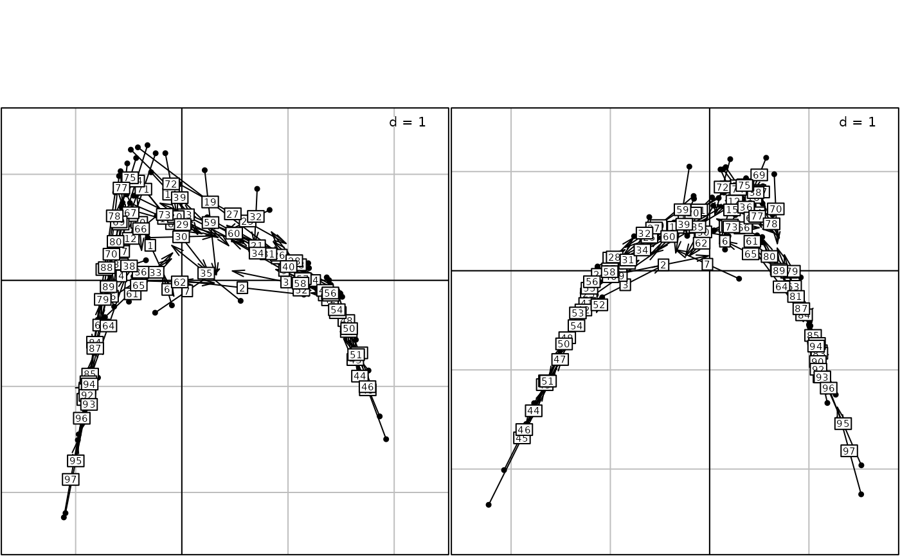

This function provides a multivariate extension of the univariate method of spatial autocorrelation analysis. It provides a spatial ordination by maximizing the product of variance by spatial autocorrelation.
an object of class dudi obtained by the simple analysis of a data table
an object of class listw created for example by nb2listw
a logical value indicating whether the eigenvalues barplot should be displayed
an integer indicating the number of axes with positive autocorrelation
an integer indicating the number of axes with negative autocorrelation
further arguments passed to or from other methods
an object of class multispati
the numbers of the x-axis and the y-axis
an integer indicating the position of the environment where the
data are stored, relative to the environment where the function is called.
Useful only if storeData is FALSE
a logical indicating if the data should be stored in the
returned object. If FALSE, only the names of the data arguments are
stored
a logical indicating if the graphics is displayed
Returns an object of class multispati, which contains the
following elements :
a numeric vector containing the eigenvalues
integer, number of kept axes associated to positive eigenvalues
integer, number of kept axes associated to negative eigenvalues
principle axes (v), data frame with p rows and (nfposi + nfnega) columns
principal components (XQv), data frame with n rows and (nfposi + nfnega) columns
lag vector onto the principal axes (LXQv), data frame with n rows and (nfposi + nfnega) columns
principal axes of the dudi analysis (u) onto principal axes of multispati (t(u)Qv), data frame with nf rows and (nfposi + nfnega) columns
This analysis generalizes the Wartenberg's multivariate spatial correlation
analysis to various duality diagrams created by the functions
(dudi.pca, dudi.coa, dudi.acm, dudi.mix...) If
dudi is a duality diagram created by the function dudi.pca and
listw gives spatial weights created by a row normalized coding
scheme, the analysis is equivalent to Wartenberg's analysis.
We note X the data frame with the variables, Q the column weights matrix and
D the row weights matrix associated to the duality diagram dudi. We
note L the neighbouring weights matrix associated to listw. Then, the
'multispati' analysis gives principal axes v that maximize the
product of spatial autocorrelation and inertia of row scores :
$$I(XQv)*\|XQv\|^2 = v^{t}Q^{t}X^{t}DLXQv$$
Dray, S., Said, S. and Debias, F. (2008) Spatial ordination of vegetation data using a generalization of Wartenberg's multivariate spatial correlation. Journal of vegetation science, 19, 45--56.
Grunsky, E. C. and Agterberg, F. P. (1988) Spatial and multivariate analysis of geochemical data from metavolcanic rocks in the Ben Nevis area, Ontario. Mathematical Geology, 20, 825--861.
Switzer, P. and Green, A.A. (1984) Min/max autocorrelation factors for multivariate spatial imagery. Tech. rep. 6, Stanford University.
Thioulouse, J., Chessel, D. and Champely, S. (1995) Multivariate analysis of spatial patterns: a unified approach to local and global structures. Environmental and Ecological Statistics, 2, 1--14.
Wartenberg, D. E. (1985) Multivariate spatial correlation: a method for exploratory geographical analysis. Geographical Analysis, 17, 263--283.
if (require(spdep, quiet = TRUE) & require(ade4, quiet = TRUE)) {
data(mafragh)
maf.xy <- mafragh$xy
maf.flo <- mafragh$flo
maf.listw <- nb2listw(mafragh$nb)
if(adegraphicsLoaded()) {
g1 <- s.label(maf.xy, nb = mafragh$nb, plab.cex = 0.75)
} else {
s.label(maf.xy, neig = mafragh$neig, clab = 0.75)
}
maf.coa <- dudi.coa(maf.flo,scannf = FALSE)
maf.coa.ms <- multispati(maf.coa, maf.listw, scannf = FALSE, nfposi = 2, nfnega = 2)
maf.coa.ms
### detail eigenvalues components
fgraph <- function(obj){
# use multispati summary
sum.obj <- summary(obj)
# compute Imin and Imax
Ibounds <- moran.bounds(eval(as.list(obj$call)$listw))
Imin <- Ibounds[1]
Imax <- Ibounds[2]
I0 <- -1/(nrow(obj$li)-1)
# create labels
labels <- lapply(1:length(obj$eig),function(i) bquote(lambda[.(i)]))
# draw the plot
xmax <- eval(as.list(obj$call)$dudi)$eig[1]*1.1
par(las=1)
var <- sum.obj[,2]
moran <- sum.obj[,3]
plot(x=var,y=moran,type='n',xlab='Inertia',ylab="Spatial autocorrelation (I)",
xlim=c(0,xmax),ylim=c(Imin*1.1,Imax*1.1),yaxt='n')
text(x=var,y=moran,do.call(expression,labels))
ytick <- c(I0,round(seq(Imin,Imax,le=5),1))
ytlab <- as.character(round(seq(Imin,Imax,le=5),1))
ytlab <- c(as.character(round(I0,1)),as.character(round(Imin,1)),
ytlab[2:4],as.character(round(Imax,1)))
axis(side=2,at=ytick,labels=ytlab)
rect(0,Imin,xmax,Imax,lty=2)
segments(0,I0,xmax,I0,lty=2)
abline(v=0)
title("Spatial and inertia components of the eigenvalues")
}
fgraph(maf.coa.ms)
## end eigenvalues details
if(adegraphicsLoaded()) {
g2 <- s1d.barchart(maf.coa$eig, p1d.hori = FALSE, plot = FALSE)
g3 <- s1d.barchart(maf.coa.ms$eig, p1d.hori = FALSE, plot = FALSE)
g4 <- s.corcircle(maf.coa.ms$as, plot = FALSE)
G1 <- ADEgS(list(g2, g3, g4), layout = c(1, 3))
} else {
par(mfrow = c(1, 3))
barplot(maf.coa$eig)
barplot(maf.coa.ms$eig)
s.corcircle(maf.coa.ms$as)
par(mfrow = c(1, 1))
}
if(adegraphicsLoaded()) {
g5 <- s.value(maf.xy, -maf.coa$li[, 1], plot = FALSE)
g6 <- s.value(maf.xy, -maf.coa$li[, 2], plot = FALSE)
g7 <- s.value(maf.xy, maf.coa.ms$li[, 1], plot = FALSE)
g8 <- s.value(maf.xy, maf.coa.ms$li[, 2], plot = FALSE)
G2 <- ADEgS(list(g5, g6, g7, g8), layout = c(2, 2))
} else {
par(mfrow = c(2, 2))
s.value(maf.xy, -maf.coa$li[, 1])
s.value(maf.xy, -maf.coa$li[, 2])
s.value(maf.xy, maf.coa.ms$li[, 1])
s.value(maf.xy, maf.coa.ms$li[, 2])
par(mfrow = c(1, 1))
}
w1 <- -maf.coa$li[, 1:2]
w1m <- apply(w1, 2, lag.listw, x = maf.listw)
w1.ms <- maf.coa.ms$li[, 1:2]
w1.msm <- apply(w1.ms, 2, lag.listw, x = maf.listw)
if(adegraphicsLoaded()) {
g9 <- s.match(w1, w1m, plab.cex = 0.75, plot = FALSE)
g10 <- s.match(w1.ms, w1.msm, plab.cex = 0.75, plot = FALSE)
G3 <- cbindADEg(g9, g10, plot = TRUE)
} else {
par(mfrow = c(1,2))
s.match(w1, w1m, clab = 0.75)
s.match(w1.ms, w1.msm, clab = 0.75)
par(mfrow = c(1, 1))
}
maf.pca <- dudi.pca(mafragh$env, scannf = FALSE)
multispati.randtest(maf.pca, maf.listw)
maf.pca.ms <- multispati(maf.pca, maf.listw, scannf=FALSE)
plot(maf.pca.ms)
}
#> Warning: This function is now deprecated. Please use the 'multispati' function in the 'adespatial' package.
#>
#> Multivariate Spatial Analysis
#> Call: multispati(dudi = maf.coa, listw = maf.listw, scannf = FALSE,
#> nfposi = 2, nfnega = 2)
#>
#> Scores from the initial duality diagram:
#> var cum ratio moran
#> RS1 0.8691476 0.8691476 0.1043473 0.7250457
#> RS2 0.6491089 1.5182565 0.1822775 0.4834366
#>
#> Multispati eigenvalues decomposition:
#> eig var moran
#> CS1 0.68545912 0.8332937 0.8225901
#> CS2 0.37853390 0.5865926 0.6453097
#> CS54 -0.08077788 0.2482426 -0.3253990
#> CS55 -0.08900757 0.2749796 -0.3236879
#> Warning: This function is now deprecated. Please use the 'multispati' function in the 'adespatial' package.
#> Error in s.match(dfxy1 = maf.pca.ms$li, dfxy2 = maf.pca.ms$ls, xax = 1, yax = 2, plot = FALSE, storeData = TRUE, pos = -3, psub = list( text = "Scores and lag scores")): non convenient selection for dfxy1 or dfxy2 (can not be converted to dataframe)
